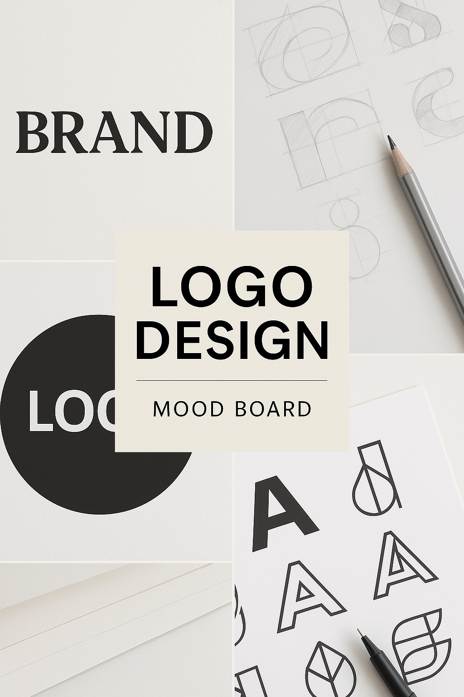

Moda

Concepto de TreceStudio: un equipo creativo que ayuda a las marcas de moda a contar su historia a través de imágenes. Escenas que transmitan cómo transformamos una prenda en una experiencia visual atractiva, capturando no solo el producto sino la emoción y el estilo de la marca. Fotografía cuidada, con composición pensada para redes sociales, campañas y catálogos. Transmitimos dinamismo, identidad y coherencia estética, creando imágenes que conectan con el público objetivo de cada cliente. Estilo moderno, fresco y versátil, pensado para potenciar la presencia y el valor de la marca en el mercado.
Producto

Concepto de fotografía de producto de TreceStudio: creamos imágenes que van más allá de mostrar un objeto, buscamos comunicar el valor, la personalidad y la esencia de cada marca. Capturamos el producto con un enfoque limpio y atractivo, cuidando la luz, los ángulos y la composición para que transmita profesionalidad y despierte interés. Pensado para catálogos, e-commerce y redes sociales, nuestro estilo potencia las cualidades del producto y lo conecta con su público objetivo. Imágenes modernas, claras y coherentes con la identidad visual de la marca, que ayudan a destacar en un mercado saturado y a generar confianza en el cliente final.
Diseño
Concepto de diseño gráfico de TreceStudio: ayudamos a las marcas a construir y reforzar su identidad visual desde cero o a mejorar la que ya tienen. Diseñamos logotipos, moodboards, paletas de color y recursos gráficos que transmiten los valores, el estilo y la personalidad de la marca. Nuestro objetivo es crear piezas coherentes, modernas y funcionales que no solo sean estéticamente atractivas, sino que comuniquen de forma efectiva y conecten con el público. Cada diseño es pensado como parte de una estrategia global, manteniendo una línea visual clara que permita a la empresa destacar y diferenciarse en su sector.